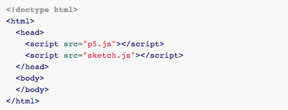
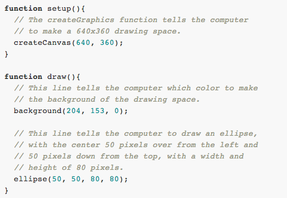

p5.js
p5.js is a JavaScript library that starts with the original goal of Processing, to make coding accessible for artists, designers, educators, beginners, and reinterpets this for today, for the web. The library is intended to introduce creative coding, introduce web development, and provide a tie between the two. It it important that while this is accessible for beginners, it’s not a sandbox environment and people develop real web development literacy, and the ability to extend and learn new things on their own. The library is not domain specific, it’s useful for general creative coding from drawing, to working with text, images, DOM, etc.
p5.js is about bringing Processing ideas and community to JavaScript and the web, rather than emulating Processing/Java through JavaScript. We hope to build a strong support community of users for constructive help, with a focus on teaching and learning. We have been focusing on language design, development, and documentation, but a p5.js web IDE is also in the plan.
p5.js is currently developed by Lauren McCarthy and Evelyn Eastmond and other contributors, with the support of the Processing Foundation, NYU ITP, and Bocoup.
Getting Started
Download the p5.js file and create a new index.html file and a new sketch.js file. You want to link to p5.js and your sketch.js file in the head of the html file. Make sure all three files are in the same folder. You can use any code editor you like, we recommend Sublime Text.
Example index.html file: 
Example sketch.js file: 
Alternatively, you can download the whole project and copy the examples/empty-example folder to any location you like and edit the sketch.js file.
Reference. View the reference here. The API page lists all implemented functions.
Source. The source code of p5.js is available on github.
Tutorials
Find a list of examples in the current distribution of OBJLoader, or have a look at them by following the links below.
- Getting started - set up your environment and create your first sketch.
- Processing syntax conversion - Processing > p5.js and back!
- p5.js basics - the basics of drawing in the canvas.
- Beyond the canvas - creating and manipulating elements on the page beyond the canvas.
- Working with other libraries - finding, adding, and integrating other JS libraries.
- Development - getting started and overview for those that want to contribute to development.
- Learning Processing examples - port of the first 10 chapters of examples from Dan Shiffman's Learning Processing book.